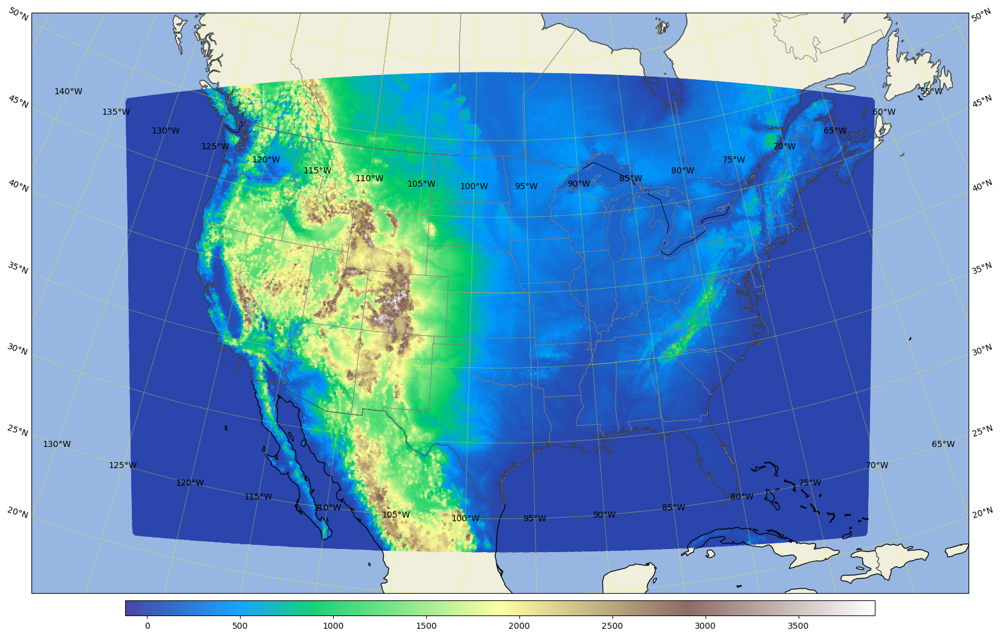
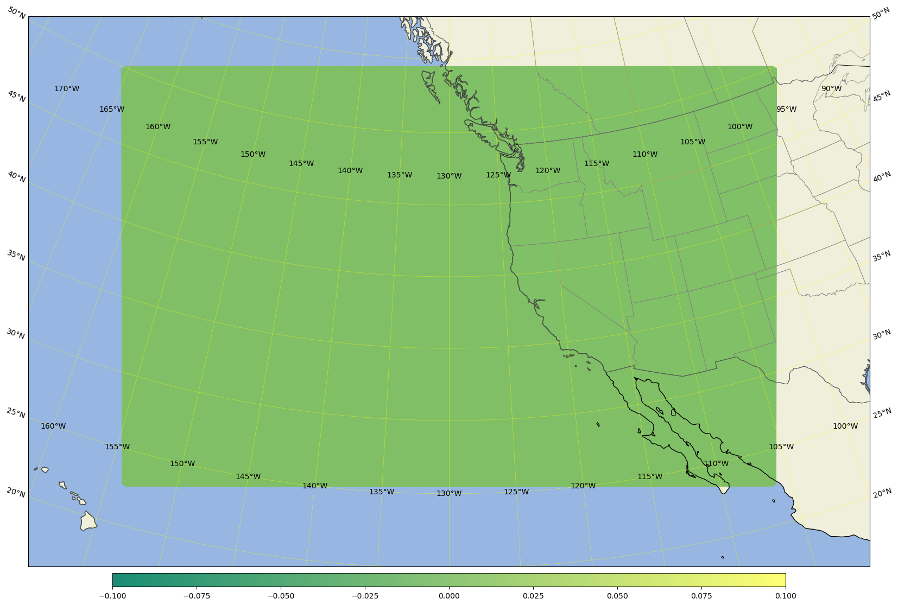
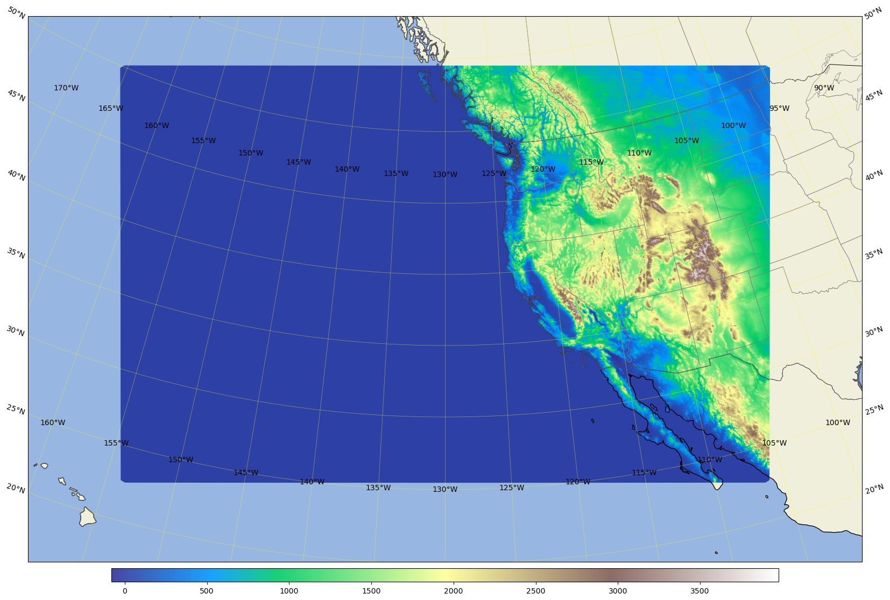
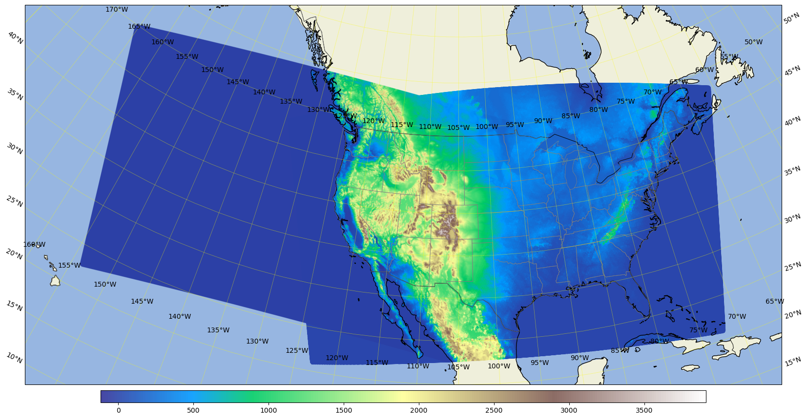
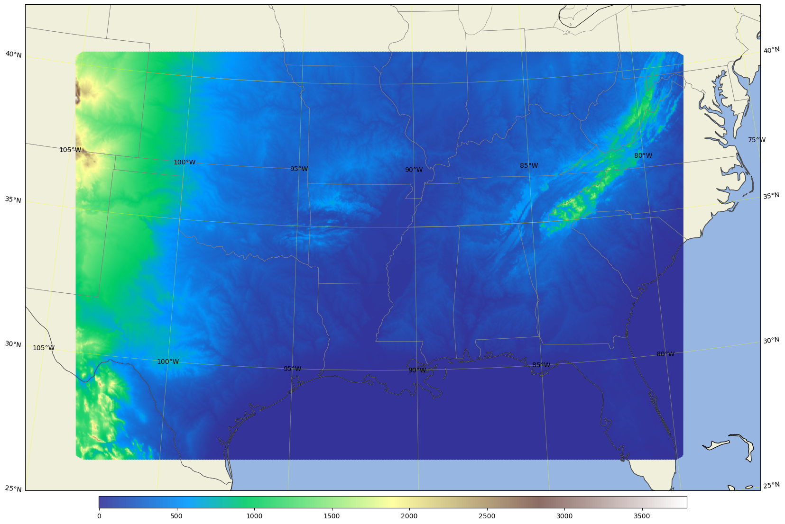
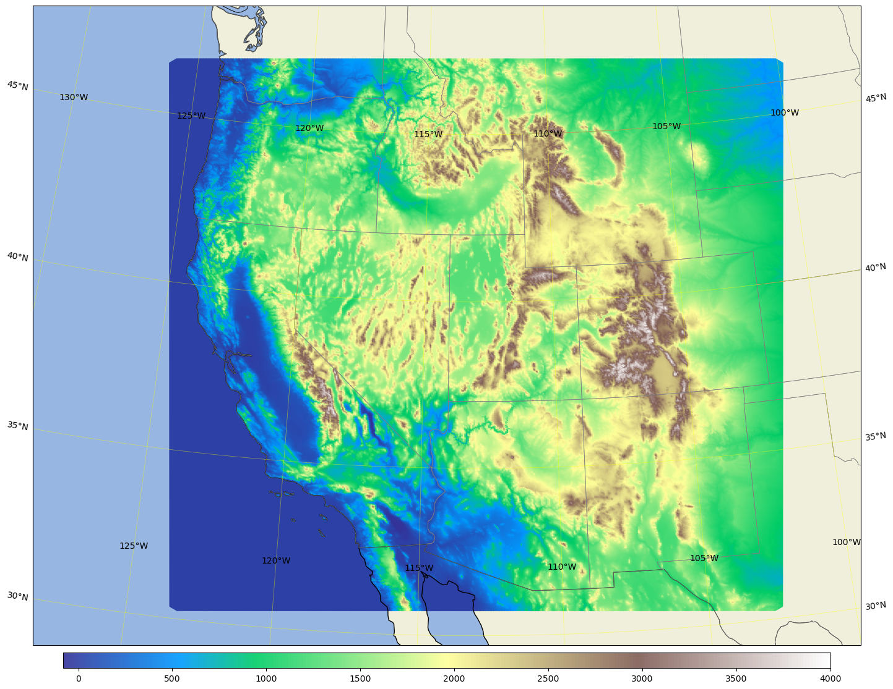

Plot the domain shape from grid.nc or domain terrain from static.nc#
Being able to plot the domain shape from grid.nc will accelerate adjusting domain design.
This notebook is not limited to domain shape or domain terrain. Other horizontal fields can be plotted similarly.
Adapted from Sijie Pan’s MPAS_terrain_plot.ipnb by Guoqing Ge
get the pyDAmonitor_ROOT env variable#
This step is highly recommended. It is required if one want to use the DAmonitor Python package or use the MPAS/FV3 sample data or local cartopy nature_earth_data.
%%time
# autoload external python modules if they changed
%load_ext autoreload
%autoreload 2
import sys, os
pyDAmonitor_ROOT=os.getenv("pyDAmonitor_ROOT")
if pyDAmonitor_ROOT is None:
print("!!! pyDAmonitor_ROOT is NOT set. Run `source ush/load_pyDAmonitor.sh`")
else:
print(f"pyDAmonitor_ROOT={pyDAmonitor_ROOT}\n")
sys.path.insert(0, pyDAmonitor_ROOT)
pyDAmonitor_ROOT=/home/Guoqing.Ge/pyDAmonitor
CPU times: user 10.7 ms, sys: 53 ms, total: 63.7 ms
Wall time: 101 ms
import modules#
%%time
import numpy as np
from netCDF4 import Dataset
import matplotlib.pyplot as plt
import matplotlib as mpl
import cartopy
import cartopy.crs as ccrs
import cartopy.feature as cfeature
CPU times: user 246 ms, sys: 115 ms, total: 361 ms
Wall time: 442 ms
wrap the LLC (Lambert Conformal Conic) plotting in a function, so that we can make mutiple plots for different grids, different fields#
def mpas_llc_scatter(lons, lats, field, area, cmap, ref_lat, ref_lon, trulat1, trulat2):
cartopy.config['data_dir'] = f"{pyDAmonitor_ROOT}/data/natural_earth_data"
# create a canvas of size 20inches x 16 inches, default dpi=100
fig = plt.figure(figsize=(20, 16))
# use a LambertConformal projection
projection = ccrs.LambertConformal(central_longitude=ref_lon, central_latitude=ref_lat, standard_parallels=(trulat1, trulat2))
ax = plt.axes(projection=projection)
ax.set_extent(area, crs=ccrs.PlateCarree()) # [lon1, lon2, lat1, lat2] only works for ccrs.PlateCarree
# Draw lat/lon gridlines every x° longitude, every y° latitude
gl = ax.gridlines(draw_labels=True, linewidth=0.5, color='yellow', alpha=0.5)
gl.xlocator = plt.MultipleLocator(5) # every x° longitude
gl.ylocator = plt.MultipleLocator(5) # every y° latitude
# draw exact lat/lon gridlines if needed
# from matplotlib.ticker import FixedLocator
# gl.xlocator = FixedLocator([-130, -120, -110, -100, -90])
# gl.ylocator = FixedLocator([20, 30, 40, 50])
# add costlines, country borders, state/province borders
ax.coastlines(resolution='50m') # '110m', '50m', or '10m'
ax.add_feature(cfeature.BORDERS, linewidth=0.7)
ax.add_feature(cfeature.STATES, linewidth=0.5, edgecolor='gray')
# Add land and ocean
ax.add_feature(cfeature.LAND, facecolor=cfeature.COLORS['land'])
ax.add_feature(cfeature.OCEAN, facecolor=cfeature.COLORS['water'])
# use scatter to plot the field
markersize=2
alpha=0.9
sc = ax.scatter(lons, lats, c=field, cmap=cmap, transform=ccrs.PlateCarree(), s=markersize, alpha=alpha)
# Add colorbar and title
cbar = plt.colorbar(sc, label='', orientation='horizontal', shrink=0.8, aspect=50, pad=0.01)
# plt.title('', fontsize=18)
plt.show()
return fig, ax # so that we may make futher changes outside of the function
Plot the conus3km terrrain#
%%time
area = [-130, -65, 20, 55]; # expanded conus
# use a LambertConformal projection, choose trulat1 and trulat2 around the center of your domain to reduce distortion.
ref_lon=-97.5 # reference or central lon
ref_lat=36.0 # reference or centeal lat
trulat1=36.0 # first standard parallel, no distortion
trulat2=36.0 # second standar parallel, no distortion
# for grid.nc, create a new field with all zeros so that we can plot the domain shape
# for stati.nc, get the ter field or use a zero filed as for grid.nc
dataset = Dataset(os.path.join(pyDAmonitor_ROOT,'data/mpasjedi/invariant.nc'), 'r')
lons = np.degrees(dataset.variables['lonCell'][:])
lats = np.degrees(dataset.variables['latCell'][:])
# field = np.ma.zeros_like(lons)
# cmap="summer" # more colormpas at https://matplotlib.org/stable/users/explain/colors/colormaps.html#colormaps
field = dataset.variables['ter'][:]
cmap="terrain"
fig, ax = mpas_llc_scatter(lons, lats, field, area, cmap, ref_lat, ref_lon, trulat1, trulat2)
plt.show()

CPU times: user 21.3 s, sys: 362 ms, total: 21.6 s
Wall time: 21.7 s
plot the ar3.5km domain shape#
area = [-160, -100, 20, 55]; # for ar3.5km
# area = [-170, -95, 10, 65]; # for ar3.5kmBig
ref_lon=-130 # reference or central lon
ref_lat=40.0 # reference or centeal lat
trulat1=35.0 # first standard parallel, no distortion
trulat2=45.0 # second standar parallel, no distortion
dataset = Dataset(os.path.join(pyDAmonitor_ROOT, 'data/mpasjedi/ar3.5km.static.nc'), 'r')
lons = np.degrees(dataset.variables['lonCell'][:])
lats = np.degrees(dataset.variables['latCell'][:])
# field = dataset.variables['ter'][:]
# cmap="terrain"
field = np.ma.zeros_like(lons)
cmap = "summer"
fig, ax = mpas_llc_scatter(lons, lats, field, area, cmap, ref_lat, ref_lon, trulat1, trulat2)

Plot the ar3.5km domain terrain#
area = [-160, -100, 20, 55]; # for ar3.5km
# area = [-170, -95, 10, 65]; # for ar3.5kmBig
ref_lon=-130 # reference or central lon
ref_lat=40.0 # reference or centeal lat
trulat1=35.0 # first standard parallel, no distortion
trulat2=45.0 # second standar parallel, no distortion
dataset = Dataset(os.path.join(pyDAmonitor_ROOT, 'data/mpasjedi/ar3.5km.static.nc'), 'r')
lons = np.degrees(dataset.variables['lonCell'][:])
lats = np.degrees(dataset.variables['latCell'][:])
field = dataset.variables['ter'][:]
cmap="terrain"
# field = np.ma.zeros_like(lons)
# cmap = "summer"
fig, ax = mpas_llc_scatter(lons, lats, field, area, cmap, ref_lat, ref_lon, trulat1, trulat2)

Plot the ar3.5km domain terrain plus the conus3km domain terrain#
%%time
area = [-160, -65, 20, 55]; # conus3km + ar3.5km
# use a LambertConformal projection, choose trulat1 and trulat2 around the center of your domain to reduce distortion.
ref_lon=-105 # reference or central lon
ref_lat=36.0 # reference or centeal lat
trulat1=36.0 # first standard parallel, no distortion
trulat2=36.0 # second standar parallel, no distortion
# for grid.nc, create a new field with all zeros so that we can plot the domain shape
# for stati.nc, get the ter field or use a zero filed as for grid.nc
# conus3km
dataset = Dataset(os.path.join(pyDAmonitor_ROOT,'data/mpasjedi/invariant.nc'), 'r')
lons = np.degrees(dataset.variables['lonCell'][:])
lats = np.degrees(dataset.variables['latCell'][:])
field = dataset.variables['ter'][:]
cmap="terrain"
# field = np.ma.ones_like(lons)
# cmap = "summer"
# ar3.5km
dataset2 = Dataset(os.path.join(pyDAmonitor_ROOT,'data/mpasjedi/ar3.5km.static.nc'), 'r')
lons2 = np.degrees(dataset2.variables['lonCell'][:])
lats2 = np.degrees(dataset2.variables['latCell'][:])
field2 = dataset2.variables['ter'][:]
# field2 = np.ma.ones_like(lons2)
cartopy.config['data_dir'] = f"{pyDAmonitor_ROOT}/data/natural_earth_data"
# create a canvas of size 20inches x 16 inches, default dpi=100
fig = plt.figure(figsize=(20, 16))
# use a LambertConformal projection
projection = ccrs.LambertConformal(central_longitude=ref_lon, central_latitude=ref_lat, standard_parallels=(trulat1, trulat2))
ax = plt.axes(projection=projection)
ax.set_extent(area, crs=ccrs.PlateCarree()) # [lon1, lon2, lat1, lat2] only works for ccrs.PlateCarree
# Draw lat/lon gridlines every x° longitude, every y° latitude
gl = ax.gridlines(draw_labels=True, linewidth=0.5, color='yellow', alpha=0.5)
gl.xlocator = plt.MultipleLocator(5) # every x° longitude
gl.ylocator = plt.MultipleLocator(5) # every y° latitude
# draw exact lat/lon gridlines if needed
# from matplotlib.ticker import FixedLocator
# gl.xlocator = FixedLocator([-130, -120, -110, -100, -90])
# gl.ylocator = FixedLocator([20, 30, 40, 50])
# add costlines, country borders, state/province borders
ax.coastlines(resolution='50m') # '110m', '50m', or '10m'
ax.add_feature(cfeature.BORDERS, linewidth=0.7)
ax.add_feature(cfeature.STATES, linewidth=0.5, edgecolor='gray')
# Add land and ocean
ax.add_feature(cfeature.LAND, facecolor=cfeature.COLORS['land'])
ax.add_feature(cfeature.OCEAN, facecolor=cfeature.COLORS['water'])
# use scatter to plot the field
markersize=2
alpha=0.9
sc = ax.scatter(lons, lats, c=field, cmap=cmap, transform=ccrs.PlateCarree(), s=markersize, alpha=alpha)
sc2 = ax.scatter(lons2, lats2, c=field2, cmap=cmap, transform=ccrs.PlateCarree(), s=1, alpha=0.2)
# sc2 = ax.scatter(lons2, lats2, facecolor="blue", edgecolor="none", transform=ccrs.PlateCarree(), s=1, alpha=0.2) # tansparent sc2
# Add colorbar and title
cbar = plt.colorbar(sc, label='', orientation='horizontal', shrink=0.8, aspect=50, pad=0.01)
# plt.title('', fontsize=18)
plt.show()

CPU times: user 29.8 s, sys: 332 ms, total: 30.1 s
Wall time: 30.2 s
Plot the south3.5km terrrain#
area = [-105, -77, 25, 42]; # for south3.5km
ref_lon=-91.5 # reference or central lon
ref_lat=34.0 # reference or centeal lat
trulat1=34.0 # first standard parallel, no distortion
trulat2=34.0 # second standar parallel, no distortion
dataset = Dataset(os.path.join(pyDAmonitor_ROOT,'data/mpasjedi/south3.5km.static.nc'), 'r')
lons = np.degrees(dataset.variables['lonCell'][:])
lats = np.degrees(dataset.variables['latCell'][:])
field = dataset.variables['ter'][:]
cmap="terrain"
fig, ax = mpas_llc_scatter(lons, lats, field, area, cmap, ref_lat, ref_lon, trulat1, trulat2)

Plot the west3km terrain#
area = [-128, -100, 29, 48]; # for west3km
ref_lon=-113 # reference or central lon
ref_lat=39.0 # reference or centeal lat
trulat1=36.0 # first standard parallel, no distortion
trulat2=42.0 # second standar parallel, no distortion
dataset = Dataset(os.path.join(pyDAmonitor_ROOT,'data/mpasjedi/west3km.v3.static.nc'), 'r')
lons = np.degrees(dataset.variables['lonCell'][:])
lats = np.degrees(dataset.variables['latCell'][:])
field = dataset.variables['ter'][:]
cmap="terrain"
# field = np.ma.zeros_like(lons)
# cmap = "summer"
fig, ax = mpas_llc_scatter(lons, lats, field, area, cmap, ref_lat, ref_lon, trulat1, trulat2)

Save Sijie’s original variable_scatter function(..) for reference#
def variable_scatter(lons, lats, values, plotvar, colormap="terrain", colornorm=None, markersize=1.0,
alpha=1.0, regional=True, area=[-140, -50, 20, 60], clon=-95, clat=40):
fig = plt.figure(figsize=(20, 16))
cartopy.config['data_dir'] = f"{pyDAmonitor_ROOT}/data/natural_earth_data"
if regional:
projection = ccrs.LambertConformal(central_longitude=clon, central_latitude=clat,
standard_parallels=(clat, clat))
ax = plt.axes(projection=projection)
ax.set_extent(area, crs=ccrs.PlateCarree())
else:
projection = ccrs.PlateCarree(central_longitude=180.0)
ax = plt.axes(projection=projection)
# Add gridlines
gl = ax.gridlines(draw_labels=True, linewidth=0.5, color='gray', alpha=0.5)
# Set where the lines should be
gl.xlocator = plt.MultipleLocator(5) # every x° longitude
gl.ylocator = plt.MultipleLocator(5) # every y° latitude
land = cfeature.NaturalEarthFeature('physical', 'land', '50m',
edgecolor='face',
facecolor=cfeature.COLORS['land'])
ax.add_feature(land, zorder=0)
ocean = cfeature.NaturalEarthFeature('physical', 'ocean', '50m',
edgecolor='face',
facecolor=cfeature.COLORS['water'])
ax.add_feature(ocean, zorder=0)
# Add coastlines
coast = cfeature.NaturalEarthFeature(category='physical', scale='50m', name='coastline')
ax.add_feature(coast, edgecolor='black', facecolor='none', linewidth=0.5)
# Add country borders
countries = cfeature.NaturalEarthFeature(category='cultural', scale='50m', name='admin_0_countries')
ax.add_feature(countries, edgecolor='black', facecolor='none', linewidth=0.7)
# Add state lines
states = cfeature.NaturalEarthFeature(category='cultural', scale='50m', name='admin_1_states_provinces')
ax.add_feature(states, edgecolor='gray', facecolor='none', linewidth=0.5)
sc = ax.scatter(lons, lats, c=values, cmap=colormap, norm=colornorm, transform=ccrs.PlateCarree(), s=markersize, alpha=alpha)
# Calculate the statistics
max_value = np.nanmax(values)
min_value = np.nanmin(values)
mean_value = np.nanmean(values)
std_value = np.nanstd(values)
## Add the statistics as text annotations on the plot
#ax.text(0.025, 0.20, f'Max: {max_value:.4f}', transform=ax.transAxes, fontsize=12, verticalalignment='top', horizontalalignment='left', color='black')
#ax.text(0.025, 0.15, f'Min: {min_value:.4f}', transform=ax.transAxes, fontsize=12, verticalalignment='top', horizontalalignment='left', color='black')
#ax.text(0.025, 0.10, f'Mean: {mean_value:.4f}', transform=ax.transAxes, fontsize=12, verticalalignment='top', horizontalalignment='left', color='black')
#ax.text(0.025, 0.05, f'Std: {std_value:.4f}', transform=ax.transAxes, fontsize=12, verticalalignment='top', horizontalalignment='left', color='black')
# Add a colorbar at the bottom
cbar = plt.colorbar(sc, label='', orientation='horizontal', shrink=0.8, aspect=50, pad=0.01)
plt.title('', fontsize=18)
%%time
dataset = Dataset(os.path.join(pyDAmonitor_ROOT,'data/mpasjedi/west3km.v3.static.nc'), 'r')
lons = np.degrees(dataset.variables['lonCell'][:])
lats = np.degrees(dataset.variables['latCell'][:])
maxlat = 29
minlat = 48
maxlon = -100
minlon = -128
terrain = dataset.variables['ter'][:]
cmap="terrain"
# cmap="summer"
# terrain = np.ma.zeros_like(lons)
variable_scatter(lons, lats, terrain, plotvar="figure", colormap=cmap, markersize=2, alpha=0.9, regional=True, area=[minlon, maxlon, minlat, maxlat], clon=-113, clat=39)
CPU times: user 104 ms, sys: 1.97 ms, total: 105 ms
Wall time: 106 ms